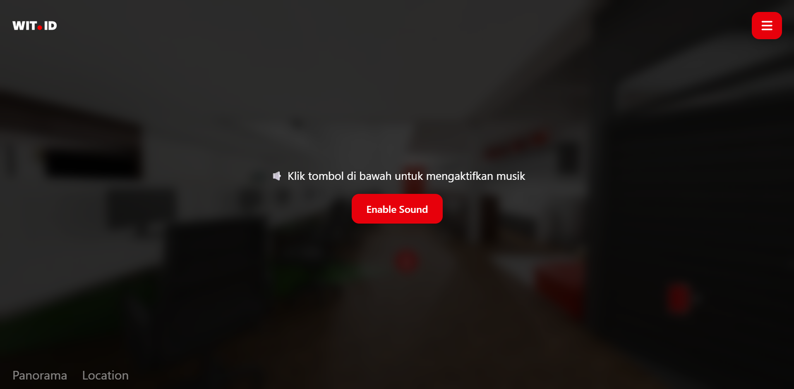
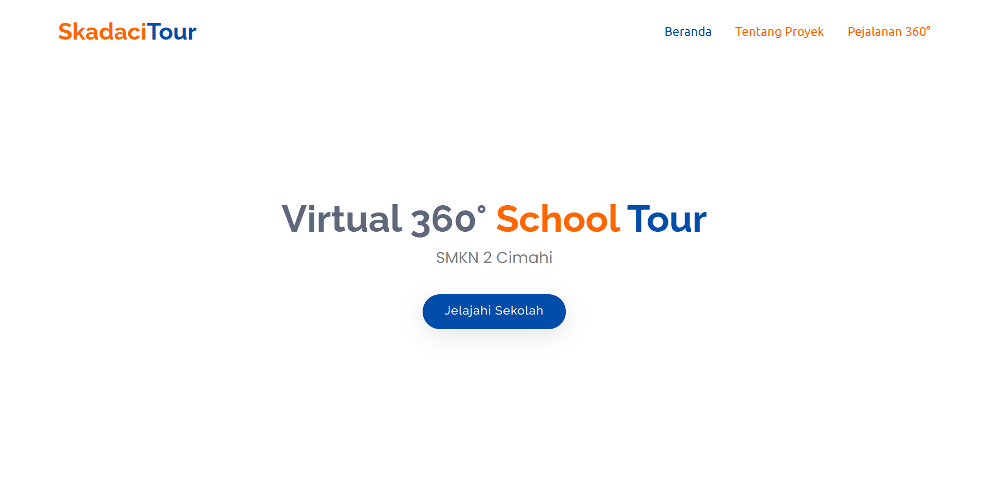
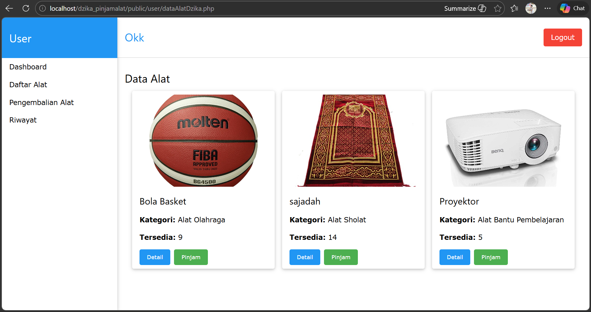
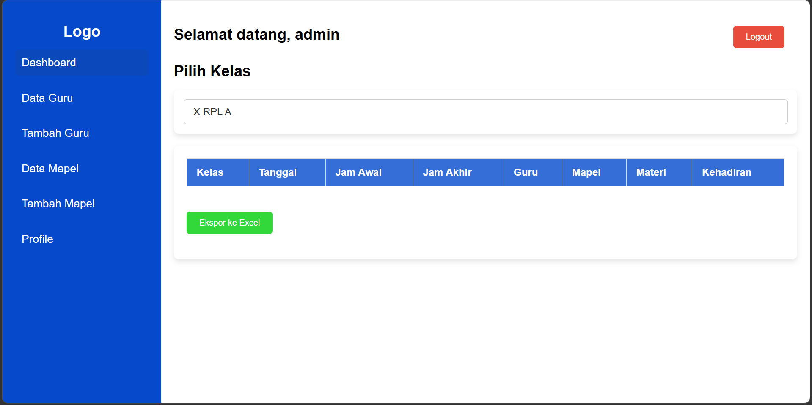
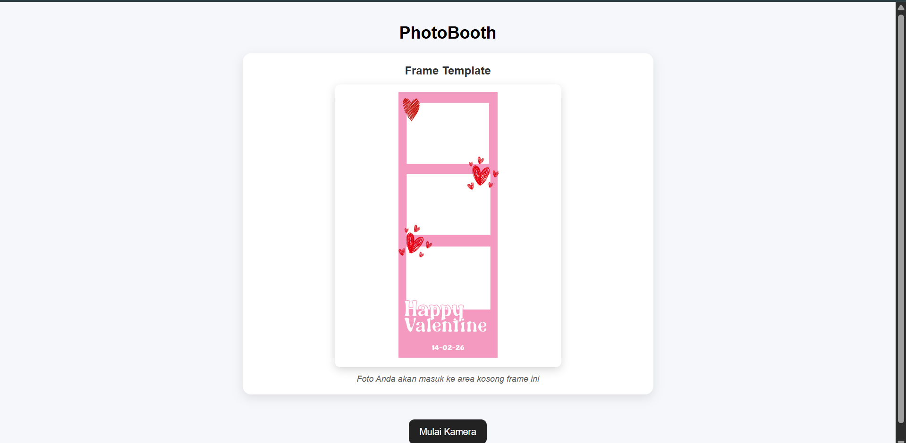
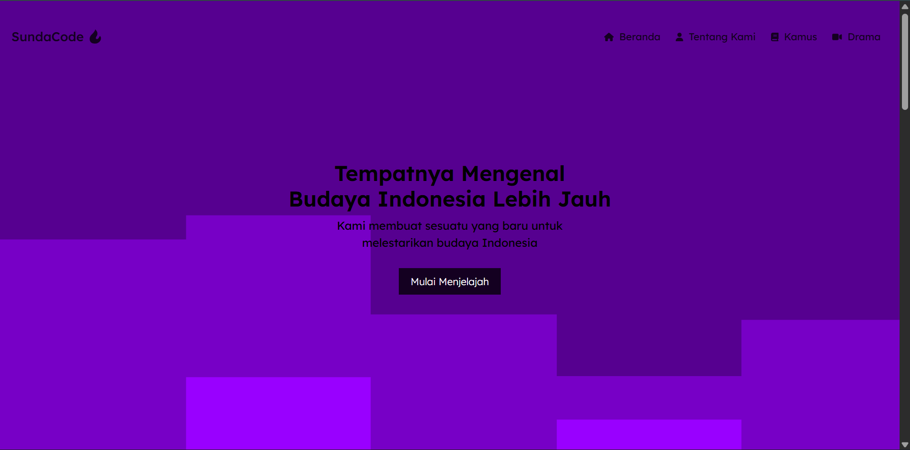

Berikut beberapa project yang telah saya kerjakan. Fokus pada frontend development, UI/UX, dan sistem berbasis web modern.


Website virtual tour 360° untuk SMK Negeri 2 Cimahi, menampilkan panorama interaktif dan informasi sekolah. Dibangun dengan Javascript dengan menggunakan kamera insta 360\ untuk tampilan yang responsif dan mudah digunakan. Ini merupakan tugas akhir kelas 11 saya.

Penugasan membuat sistem peminjaman alat berbasis web untuk sekolah, dengan fitur manajemen inventaris, peminjaman, dan pengembalian. Dibangun menggunakan PHP dan MySQL untuk backend, serta w3css untuk frontend yang responsif. Merupakan tugas ujikompetensi keahlian kelas 12 saya.


Website photoboth sederhana yang memungkinkan pengguna untuk mengambil foto dengan efek filter dan menyimpannya. Dibangun menggunakan JavaScript untuk menangani kamera dan efek, serta TailwindCSS untuk desain yang responsif. Merupakan project pribadi yang saya buat untuk belajar interaksi kamera di web.

Website edukasi belajar bahasa Sunda dengan fitur interaktif dan kuis. Dibangun menggunakan JavaScript untuk logika interaktif, TailwindCSS untuk desain yang responsif, dan AOS untuk animasi scroll yang menarik. Merupakan project pribadi yang saya buat untuk mempromosikan budaya Sunda melalui teknologi web. Merupakan tugas pertama saya bersama teman teman saya.
Saya siap membantu membuat website modern dan responsif.
Contact Me